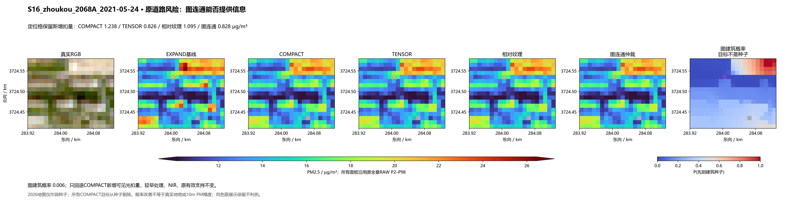
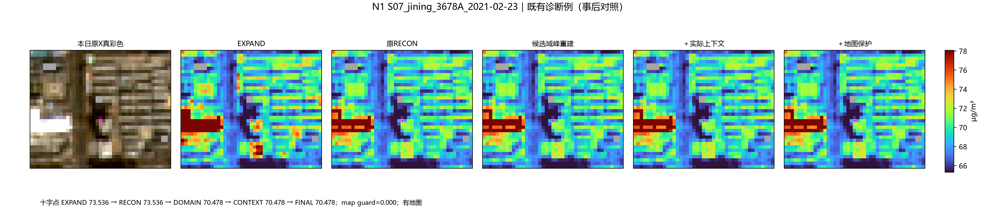
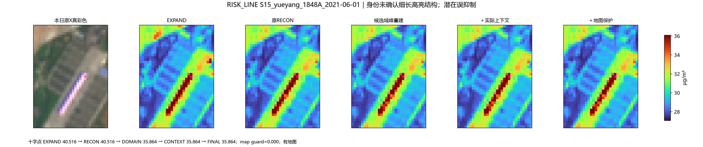
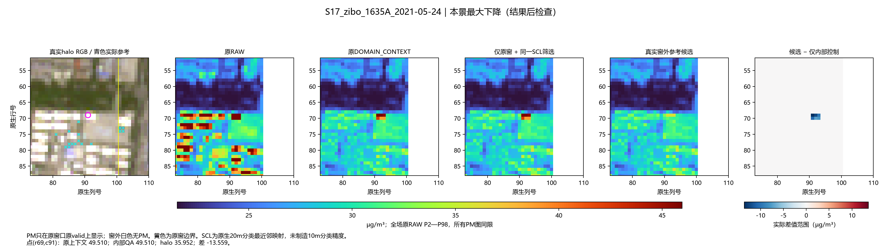

6小时任务进行中 · 2026年11月5日 11:48—17:48 · 原156场＋50个新增日期
交互页默认比较「局地突出量重建」和「小峰＋同日参照＋道路保护」，也保留 B-Gaussian、旧方向保护方案等33种方法。可同步放大小屋顶、切换四季共同色限，查看真实数值变化。
27种为本轮全量候选或组合，6种为既有基线。所有方法保持原支持；灰色为原无效区域。真彩色用于地物定位。把原有效10米像元按四邻接连成图，以四波段的相对谱形决定连接强弱。真实建筑覆盖和路网提供两类弱种子；先移除所有本次目标自身的种子，再计算其与周边建筑或道路的连通概率，用于COMPACT新增处理的方向保护。无需新拟合，原36场缺少相同地图口径，因此保持TENSOR。
原30个诊断对象平均新增降低：TENSOR 0.491、相对纹理0.768、图连通0.775 µg/m³。原231个地图交格退回新增扣量：TENSOR 37.19%、相对纹理21.15%、图连通32.83%。图连通在这两项既有观察上取得较好的折中；它仍不能完全分开屋顶与道路，也没有独立像元PM准确度证据。
周口浅路保留的新增压低量从相对纹理1.095减至0.828，接近TENSOR的0.826；大庆一处无建筑轮廓的小亮对象从0.505增强至0.612，接近COMPACT的0.613。相反，阳泉部分亮点被较强保护，缓解从0.801退回0.674；永州混合格仍有1.505的新增降低。

早期DOMAIN造成的岳阳未知细长结构降低4.65 µg/m³仍未变；它不是本次COMPACT目标，图连通也偏向建筑，不能据此扩大到全部早期处理。站窗RMSE约19.640，事件背景幅度问题未改善。
| 发现的原因 | 当前改动 |
|---|---|
| 小亮物体被缺测填补或相邻非候选连接并入大平台 | 在真实有效的材料候选内寻找局地小峰，再确定其范围。 |
| 树木环绕、窗口边缘使合格参照不足 | 只给不足的对象补充同日、真实、谱形相近的多方向参照。 |
| 亮道路或道路边缘被一并削弱 | 结合实际地图中心线和当天四波段的沿路连续性，部分保留新增输入改动前的细节。 |
这些步骤作用于输入 X，再通过同一个冻结的 PM 头推理；没有直接画高道路或改色带制造缓解。本轮组合是候选，仍保留局部误抑制与部分亮点回升的情况。

济宁原来漏掉的小峰：同场、同色限、原支持的逐步对照。30地点地图均已取得，其中29地点的有效窗口内有道路中心线。地图辅助保护能恢复部分沿路变化，但有些细长结构没有地图覆盖，也有混合像元可能带回部分亮屋顶高值。
岳阳2021-06-01的一条身份未确认的细长高亮结构，组合方案仍比旧方案低4.65 µg/m³；此处没有地图线覆盖。它保留为不利例，不能列为小屋顶处理成功。

50个新日期的25组PM事件中，组合方案有23组方向与实测一致，但阳泉、焦作已有的背景幅度不足或反向仍未解决。小屋顶处理主要改变局部纹理，未改善这一事件缺口。原156场站窗RMSE约19.639，旧方案约19.607 µg/m³；没有据此宣称PM精度提高。
查看济宁、淄博真实外沿试验。从原产品读取窗口外200米的四个原生10米波段；质量分类仍为原生20米，映射到10米只用于筛选参考。
淄博一个残留亮峰的6格均值从43.84降至33.64 µg/m³；另有局部回升（最大1.11）。济宁当前没有需要补充的对象，因此PM不变。这是两景有界试验，尚未推广为所有场景的处理方式。

外部新增四个真实参考像元，使原来只有一个方向的参考达到两个方向；冻结原参数后重新推理。图中只显示原窗口PM，窗外白色不代表零。
查看六地点35张正反对照图与实际指标。30个同产品源资产均成功读取，沿用两景试验的冻结方法与强度，没有新拟合。
61,204个原有效像元中，157格下降、130格回升、60,917格不变；多数变化较小。5个核心补足了参考方向，最大下降为济南3.271、北京2.766 µg/m³，最大回升为徐州0.886 µg/m³。真实窗外参照只带来有限的边界上下文收益，不能据此称全局改善。
济南最大下降处仍是身份未确认的混合亮表面；北京原RGB有明显灰雾。六景保持原支持和同色限，尚未并入主156/50场组合。查看4景12张道路边界对照。保持原保护参数，仅用实际窗外影像补双向道路路径。两处极亮边点虽然路径补齐，但与邻路的光谱和亮度仍不连续，因此结果未改变；四景仅13格发生变化，最大恢复0.871 µg/m³。此试验保留为边界信息补齐候选。
查看REFERENCE_STATE_REOPEN的9张收益与失败对照。同一组参考像元改读其既有EXPAND状态，只处理原先没有正扣除幅度的小峰；北京A示例3格中2格改变，均值32.416降至31.075 µg/m³，但四季120场小亮区域的每场均值额外下降平均仅0.002963，旧36场为0.017743。
南通仍有3个地图中心线相交像元额外降低，最大0.369 µg/m³，保留为潜在道路代价；原已起作用部分不变，站窗和事件精度没有改善。这是有限局部补充，不能由北京突出例推断全面改善。
查看新候选的12张局部正反对照 · 6个完整场景与同范围放大图 · 为何这些小点原先没被处理
原先较平缓的小亮点未形成显著性核心；用完整紧凑形状补充定位后，30个已用于故障诊断的对象中26个发生变化。全156场小亮区域平均额外降低约0.025 µg/m³，改善仍集中于少数像元。
与此同时，231个地图道路相交格被新增降低，最大1.64 µg/m³，图中可见连续浅路受影响。此方案保留为并列候选；下方PATH与TENSOR分别展示连续路径和局部方向对这一步的保护。
查看12张收益与退款对照。仅保护“紧凑形状补识别”这一步新增的输入扣量，使用当日影像中实际连续路径的长度和方向差异。原156场保留86.54%的该步扣量，125个地图线相交像元部分恢复；永州重点点的额外降低从1.643缩至0.958 µg/m³。
原30个诊断对象仍有26个缓解，平均新增降低从0.909变为0.880。周口与济宁两处亮度沿途起伏的浅路仍未恢复；路径保护也会带回部分小亮物体。这是有明确代价的候选。
7个场景：CS与当前组合的同范围比较。CS在吉安、铁岭部分小亮区更强，但曲靖原六格的缓解远弱于当前组合；不能把它直接当作全面升级。缺测填补造成的漏峰与道路混合像元的代价也在图集中保留。
局部方向保护：浅路恢复与亮点回升并列看 · CS有效域修正：补回缺测附近的小亮峰 · 新方向特征的真实输入图
局部方向保护在原156场保留61.36%的COMPACT新增压低量；前面已有的屋顶处理保持不变。它能保护一些沿途亮度起伏的浅路，也会带回部分亮屋顶。因此与路径长度保护并列比较，没有把两者继续叠加强化。
CS有效域修正在37个原场、628格产生额外变化；丹东已知4格亮块从29.099降至25.771 µg/m³。全有效的68个原场/事件场精确不变。另有永州事件场的道路与缺测边界交格额外降低3.225，保留为不利例；不能把边缘新降量全部算成屋顶修复。
33种方法包括6个既有基线与27个全量候选。不同分支有各自起点，不能把本页所有改进理解为一个按顺序叠加的模型。30地点 × 四季：方向保护阶段5种候选与RGB并列。四季使用同一色限，每行标出实际日期与有效覆盖。网页提供原尺寸JPEG预览，本地另存6600×4500、300dpi的PNG。
简洁方法说明解释X如何改变、哪些方法互为分支，以及10米输入和20米旧参照各自的作用。此前186张高清图保留为DOMAIN阶段结果；新四季图加入PATH、TENSOR和CS有效域候选。
建筑覆盖＋方向保护 · 绝对纹理分类：保留失败结果 · 相对纹理＋亮道路训练样本
三支均完成156原场和50事件场。建筑覆盖支在轮廓已知的小亮物体上减轻方向保护，原156场有893格进一步降低；但地图漏掉的物体仍无帮助。两种纹理支则直接用本日10米输入学习建筑概率，再控制同一COMPACT新增处理。
第一种分类器把留出亮道路的97.72%判成建筑，保护明显不足。第二种移除绝对亮度、使用相对纹理并加入亮道路训练样本后，同批亮道路错判降至19.82%；亮建筑召回同时降至59.72%，仍不能完全区分。亮子集的概率排序AUC反而从0.874降至0.727；0.5阈值下的错判减少不能等同于整体识别能力提高。两支合计2次输入分类器拟合，PM头均冻结。同一留出集已参与机制选择，结果属于探索性复用。
原30个诊断对象：TENSOR新增平均降低0.491，相对纹理0.768 µg/m³；但原231个地图交格的COMPACT新增扣量仅退回21.15%，旧TENSOR退回37.19%。相对纹理保留更多小亮点缓解，也牺牲部分道路保护；周口略好，永州更差，均在图中保留。
这些分支各自从COMPACT起点改变同一步保护，没有把三支叠加，也没有把输入分类分数当成PM误差。